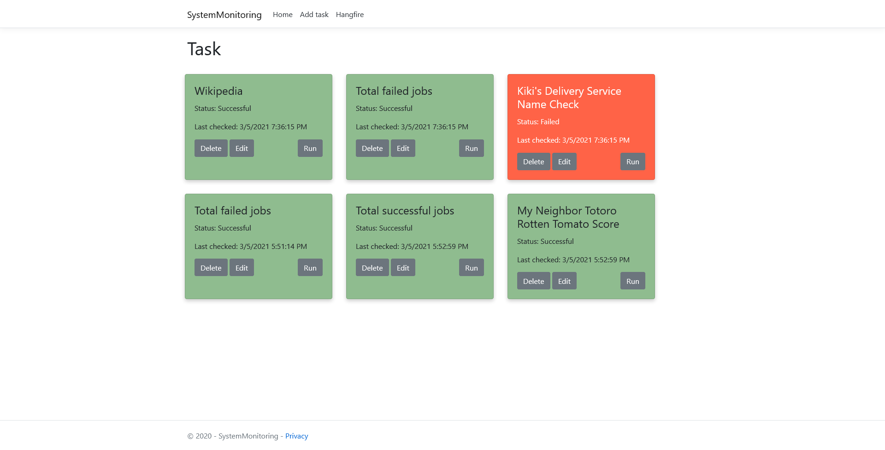

Personal Information
I am a senior majoring in Computer Science at Ball State University. During my studies I have worked in Python, C#/.NET, Java, HTML and many other languages!
Many of the my projects I have worked on have more information below!


Capstone Project
24x7 System Monitoring
This project is a program that is hosted with ASP .NET Core. It's whole purpose is with the use of API's you can input an API endpoint and be able to monitor certain criterias set by a user. This is done by setting a certain time that you want these to be checked, and you can know when things go wrong by a notification system through email and text.